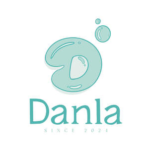

Trade Mark Journal No.2025/030 25 July 2025
UK00004236064 18 July 2025 (3)

- Class 3
- Soaps; Scented soaps; Loofah soaps; Bath soaps; Perfumed soaps; Soaps and gels; Soap; Aloe soaps; Shaving soaps; Carbolic soaps; Laundry soaps; Non-medicated soaps; Cosmetic soaps; Cream soaps; Toilet soaps; Dish soaps; Soap products; Almond soaps; Facial soaps; Liquid soaps; Hand soaps; Handmade soap; Deodorant soap; Soap (Deodorant -); Granulated soaps; Liquid bath soaps; Non-medicated toilet soaps; Saddle soaps; Bath soap; Liquid soaps for laundry; Perfumed soap; Soap powders; Soaps for brightening textiles; Aloe soap; Antiperspirant soap; Soap (Antiperspirant -); Detergent soap; Sponges impregnated with soaps; Soaps for laundry use; Creams (Soap -) for use in washing; Shaving soap; Cakes of soap; Soap (Cakes of -); Cosmetic soap; Shower soap; Laundry soap; Soap sheets; Soaps for household use; Bars of soap; Beauty soap; Soap pads; Skin soap; Hand soap; Soaps for toilet purposes; Toilet soap; Almond soap; Soap solutions; Liquid bath soap; Soaps for body care; Waterless soap; Soaps in gel form; Cakes of toilet soap; Liquid soap; Sugar soap; Granulated soap; Soap powder; Liquid soap for laundry; Bar soap; Body soap; Industrial soap; Cakes of soap for body washing; Soaps for personal use; Soaps in liquid form; Saddle soap; Soap for brightening textile; Shampoos; Bath lotions (Non-medicated -); Body cream soap; Soap free washing emulsions for the body; Aromatherapy lotions; Scented body lotions and creams; Liquid soap used in foot bath; Liquid soaps for hands and face; Shaving lotions; Paper soaps for personal uses; Liquid soap for dish washing; Perfumed lotions [toilet preparations]; Moisturising creams, lotions and gels; Aftershave lotions; Liquid soap used in foot baths; Cleansing lotions; After-shave lotions; Bath lotion; Massage oils and lotions; Cosmetic creams and lotions; Depilatory lotions; Bath and shower oils [non-medicated]; Non-medicated bath oils; Bath oils (Non-medicated -); Non-medicated lotions; Scented body lotions; Non-medicated shampoos; Cakes of soap for household cleaning purposes; Bath creams; Emollient shampoos.
Danla Limited